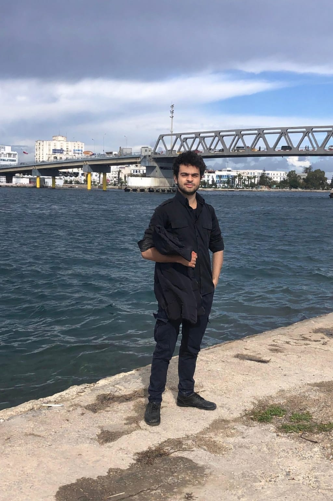
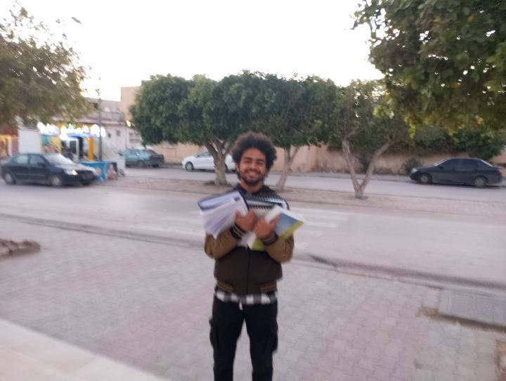
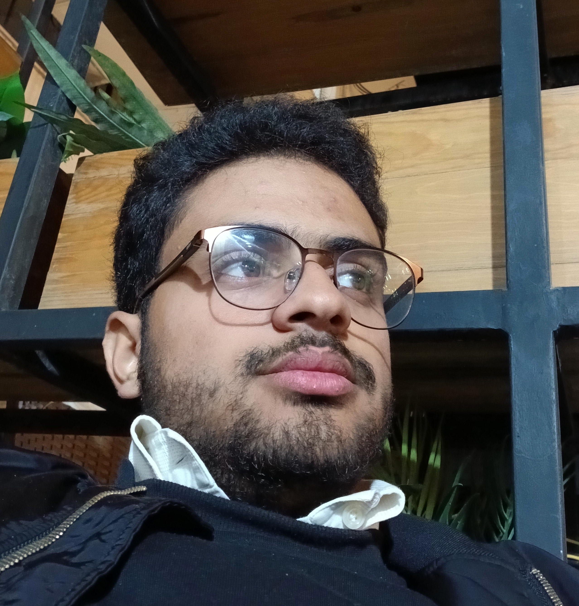
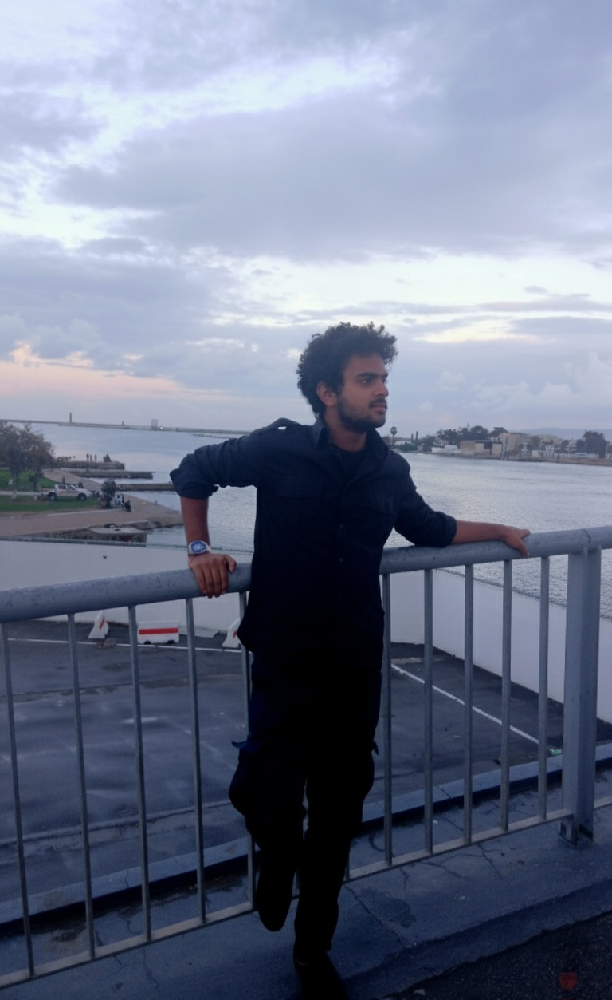
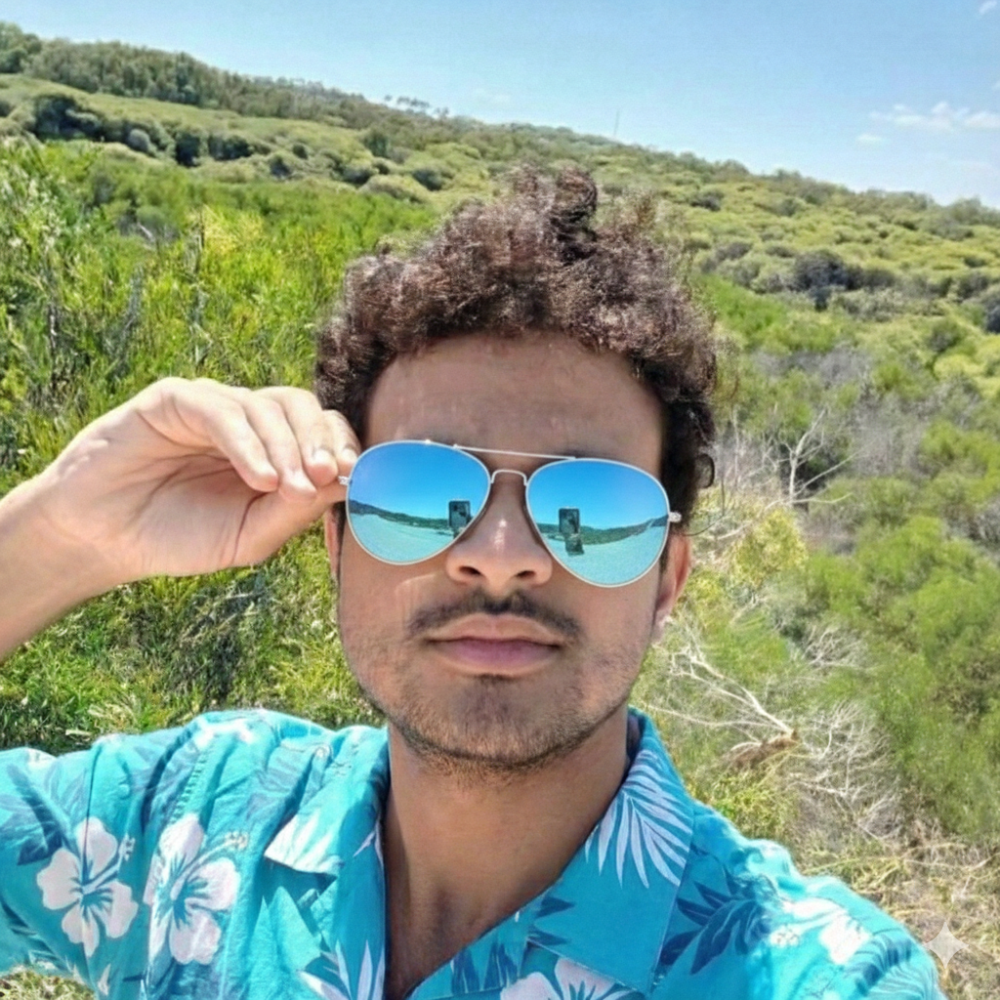
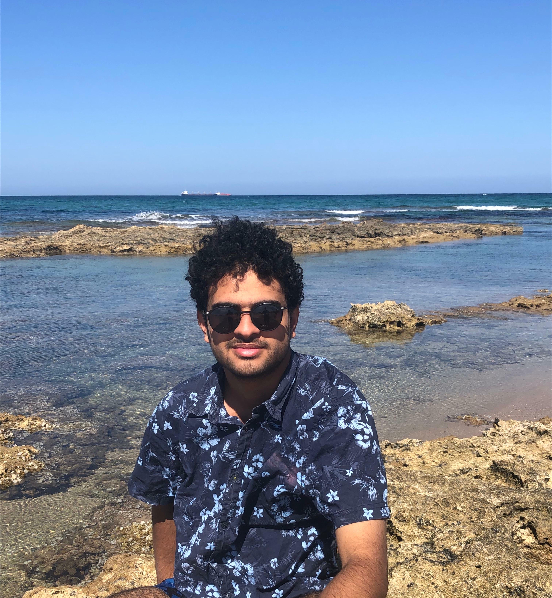

Mohamed Oussama SOYEH
Étudiant en première année CPGE a la Faculte des sciences Sfax
Je prepare un projet d'etudes en France
J’aime apprendre de nouvelles technologies et développer mes compétences
Ancien élève de Bac Math option Allemands
Né le 26 septembre 2005 en Tunisie
Je suis curieux, motivé et toujours prêt à apprendre
J’aime travailler en équipe et relever des défis



Mon parcours scolaire
J'ai fait un Bac général section mathématiques en Tunisie
Je prepare un Bac général spe Maths, Physiques-Chimies et NSI
Actuellement étudiant en 1ère année de CPGE section MP
Pendant mon cursus, j'ai eu l'occasion d'obtenir plusieurs certificats tels que :
J'étais aussi membre de quatres clubs
Club de robotique de Bir Ali (ma ville)
Club de technologie de mon lycée
Club de theatre de ma ville
Club de Cinema du centre culturel


